done on iPhone and iPad: every view, what is wrong, how to fix it
An audit of done's phone and tablet interface, view by view, with screenshots, the options each view has, its edge cases, what is broken, ugly or missing, and the fix. Ends with the native widget and Dynamic Island focus timer.
Summary
brokenLandscape and iPad get the desktop app
The phone layout switches on width alone: under 768 pt wide. An iPhone turned sideways (874 pt) and every iPad (820 and 1180 pt) get the Mac layout: a sidebar, ⌘K hints, hover-only buttons, no bottom bar, no New task button. Nothing in that layout keeps clear of the status bar, Dynamic Island or home indicator.
brokenHeader cut off: safe areas only exist in the phone layout
Every safe-area inset in the code is scoped to the phone layout (max-md:) or to phone-only components. With viewport-fit=cover the page draws under the status bar everywhere else, so on iPad and in iPhone landscape the top of every view sits under the status bar, and the left edge under the Dynamic Island. No left/right inset is used anywhere.
brokenTimeline is broken at every size
Phone: day columns about 28 pt wide, titles clipped to a few letters, check circles and faces drawn on top of each other, the first bar starts off screen, no controls. iPad portrait: the chart is a strip about 150 pt wide. Even iPad landscape and the Mac: titles are cut by the next row, the first bar starts off screen, the page scrolls sideways.
brokenNotes are a Markdown source editor, not Apple Notes
A note shows its raw Markdown: # Title, **bold**, - list dashes. Apple Notes shows formatted text you type into. Spacing, type size, title treatment and the keyboard toolbar are all missing. On iPad and landscape the note gets a column 110 to 200 pt wide.
uglyDesktop controls in a phone
Focus, Time sheet, Settings and Search are the desktop forms shrunk: tiny inputs (iOS zooms on focus), chips that wrap, 10 pt arrows, a centered command palette instead of a search screen.
missingActions that only exist with a mouse
Right-click menus, hover buttons and drag-only moves have no touch equivalent on several views; Assigned to me is not reachable from Lists; New task has no date, priority or list buttons.
Device matrix
| View | iPhone portrait | iPhone landscape | iPad portrait | iPad landscape |
|---|---|---|---|---|
| Today / Upcoming / Inbox / Project | uglyworks; New task floats over rows | brokendesktop layout, 3 rows visible | brokendesktop layout, header under status bar | uglydesktop layout, header under status bar |
| Lists | uglyicons missing, Assigned to me missing | n/areplaced by the sidebar | ||
| Board | uglyone column at a time, move by long press only | brokendesktop board, drag only | uglydesktop board | uglydesktop board |
| Timeline | brokenunreadable | broken2 rows visible, page scrolls sideways | brokenchart ~150 pt wide | brokentitles cut, first bar off screen |
| Notes | brokenraw Markdown, cramped toolbar, two back links | broken3 columns, note ~200 pt wide | broken3 columns, note ~110 pt wide, toolbar cut | uglyraw Markdown |
| Focus / Time sheet | uglydesktop form | ugly | ugly | ugly |
| Search | uglydesktop palette over a dimmed page | uglydesktop palette, opened by a ⌘K hint a tablet user cannot press | ||
| New task | missingno date/priority/list buttons | missinginline desktop add row | ||
| Task details | goodnative-style sheet | uglydesktop editor | ||
Cross-cutting causes
1. One width breakpoint decides phone or desktop
ui/src/hooks/use-mobile.ts: MOBILE_BREAKPOINT = 768, width only. It ignores whether the device has a mouse, so a touch device wider than 767 pt gets the Mac interface. Fix: three layouts, decided by input and size, not width alone: phone (compact width, or any touch device under 600 pt tall, which covers iPhone landscape), tablet (touch, regular width: a two-column layout with a sidebar that collapses, touch-sized rows, no shortcut hints), desktop (fine pointer). Use (pointer: coarse) and (hover: none) alongside width.
2. Safe areas only in the phone layout
The insets appear in: the phone page padding (App.tsx:481, max-md: only), the phone header (phone.tsx:79), bottom bar (phone.tsx:189), the floating New task (phone.tsx:210), the task sheet (task-editor.tsx:191), New task (quick-add.tsx:318), the filter sheet (view-filter.tsx:206) and the sidebar footer (app-sidebar.tsx:277, phone only). Never safe-area-inset-left or -right. The desktop layout, which iPad and iPhone landscape get, has none. Fix: pad the app shell itself with all four insets (padding: env(safe-area-inset-top) env(safe-area-inset-right) env(safe-area-inset-bottom) env(safe-area-inset-left)) on every layout, and only let deliberate full-bleed backgrounds ignore them; fixed elements (find bar find-bar.tsx:117 at top-3, toasts, popovers, dialogs) offset by the inset too.
3. Desktop components reused as-is
Focus, Time sheet, Settings, Search, the note toolbar and Timeline render their desktop markup at phone width. Inputs use 12–14 px text, which makes iOS zoom the page on focus; targets are under 44 pt. Fix: a phone version of each, using the iOS grouped-list pattern the Lists and Task details screens already use well.
4. Mouse-only interactions
Right-click task menus, hover-revealed buttons, drag on Timeline and Board, keyboard shortcuts. Fix: every action reachable by tap: swipe actions on rows (complete, date, delete), long-press menus, and visible buttons where desktop uses hover.
5. What the code shows beyond the screenshots
- brokenLong press opens the wrong menu. The menu's target is set only by the browser's right-click event (
App.tsx:441-454), which iOS never fires; the long press opens the menu with the last target (it starts as the workspace). Everything only in that menu (Status, Due, Priority, Project, Assign, Focus on this, Make today's goal, Add subtask) was unreachable on a phone. - brokenNotes have autocorrect and predictions off: CodeMirror's defaults (
autocorrect: off,writingsuggestions: false) are not overridden (note-editor.tsx:176). Text selection may be blocked:index.css:249-260turnsuser-selectoff onbodyand back on only for inputs, textareas and articles, not the editor. - brokenTimeline on touch: bars are
touch-noneand a drag starts on pointer-down (timeline.tsx:183-189, 537), so a pan moves the task a day; resize handles are 6–8 px; the No date list is hidden on phones and uses HTML5 drag. On phones the Timeline has no bounded height (md:h-svhonly), so its sticky date header scrolls away. - brokenRotating changes which element scrolls: phones scroll the window, the wide layout an inner panel (
App.tsx:468, 478), so rotation loses the scroll position. - uglyToasts under the Dynamic Island (
App.tsx:538, no inset offset); the phone back button always returns to Lists (phone.tsx:87); an open note on a phone has no nav bar, its back link scrolls away (notes.tsx:476-499). - uglySettings in the iPhone app shows Mac panes:
isDesktopis true for any Tauri, iOS included (backend.ts:34), so MCP setup, text size with ⌘ and "done updates itself" appear, though the updater is Mac-only. - fineInputs are already 16 px or larger (no zoom on focus); hover styles are limited to devices that hover; rubber-band scrolling is off.
Today
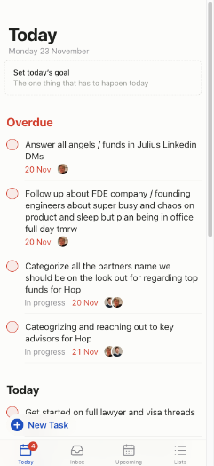
Options
- Set today's goal (the one large task)
- Overdue and Today sections; complete with the circle; open a task by tapping it
- New task (floating), badge on the Today tab with the overdue count
Problems
- uglyThe floating New task button sits on top of the last visible row with no background, so it covers a task title (here "Get started on full lawyer…").
- ugly"Set today's goal" is a dashed box that looks disabled.
- missingNo swipe to complete, reschedule or delete; no pull to refresh; no way to reorder.
- missingThe Today badge counts overdue tasks only (4) while the screen title says 13; the meaning is unclear.
Edge cases
- Very long titles wrap to four lines and push faces to their own line.
- No tasks and no goal: empty text, but the floating button still floats over nothing.
- Many overdue tasks: Today's own tasks are pushed below the fold with no jump.
Fix
Give the floating button a solid pill with shadow and add bottom padding to the list equal to its height; add swipe actions; make the goal card a normal row with a target icon.
Inbox
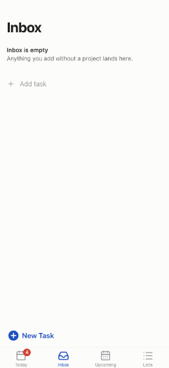
Problems
- uglyTwo ways to add on one screen: the inline "+ Add task" and the floating "New Task".
- uglyThe empty state is two small lines at the top of an empty page.
Fix
One add control on phone (the floating one); centered empty state with an icon.
Upcoming
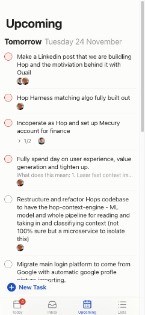
Options
- Days grouped by date, task notes previewed under titles, subtask counts
Problems
- uglyThe day header ("Tomorrow Tuesday 24 November") scrolls away; with many tasks you lose which day you are in. Should be sticky.
- missingNo week strip to jump to a day (Apple Reminders/Things have one).
- uglyNote previews are cut mid-word with no fade.
Lists
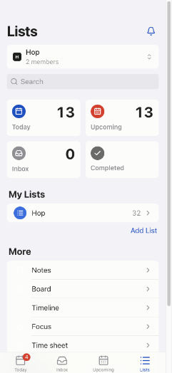
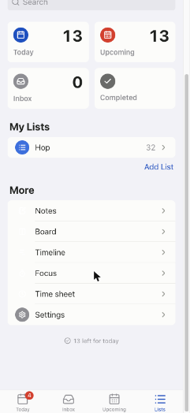
Options
- Workspace picker, Search, Today/Upcoming/Inbox/Completed tiles, My Lists (projects) with counts, Add List, More: Notes, Board, Timeline, Focus, Time sheet, Settings; bell for notifications
Problems
- uglyNotes, Board, Timeline, Focus and Time sheet have no icons; Settings does. The rows look broken.
- missingAssigned to me is not here. On the phone there is no way to reach it except search.
- uglyCompleted tile has no count while the others do.
- uglyLarge empty area under "13 left for today".
Fix
Add Assigned to me (with count) as a tile or row; give every More row a colored icon like Settings; count on Completed (today's finished).
Project
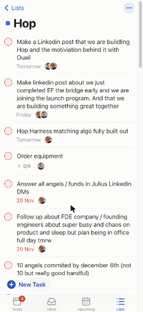
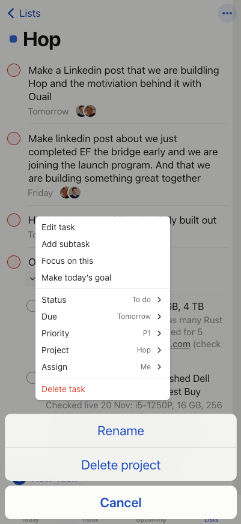
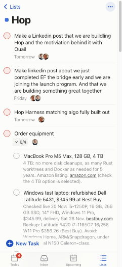
Options
- Tasks with dates, faces, subtask counts; ⋯ menu (Rename, Delete project); New task; project notes listed under the tasks
Problems
- missingNo sections or sort/group options; 32 tasks are one long list.
- missingNo "show completed" toggle.
- uglyThe task menu is a desktop dropdown with sub-menus that open on hover (Status ›, Due ›, Priority ›, Project ›, Assign ›); on a phone it should be an action sheet like the project's ⋯ menu.
- uglyOpen subtasks show each subtask's whole notes in full (a wall of text under "Order equipment"); clamp to two lines.
- uglyLarge title is fine, but the project color dot is tiny and misaligned with the title.
Assigned to me
Status
missingNot reachable from the phone's Lists screen (see Lists). On iPad/landscape it is in the sidebar with the new Only me toggle in its header. Edge case: Only me plus a workspace scope with nobody else assigned shows the same list either way; no hint explains the difference.
Completed
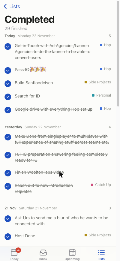
Problems
- uglyStrikethrough plus grey plus filled blue circle: three signals for one state; hard to read.
- missingNo undo/uncomplete affordance visible, no search within, no "clear".
Board
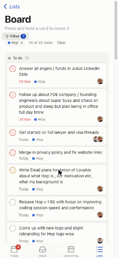
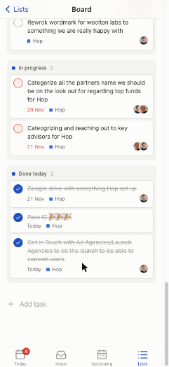
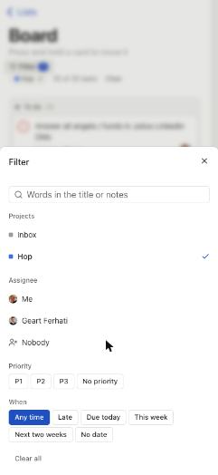
Options
- Filter (project, priority, date, words), columns To do / In progress / Done, "Press and hold a card to move it"
Problems
- uglyOn a phone the columns are stacked: To do (30 cards) first, then In progress, then Done today, so reaching In progress means scrolling past 30 cards, and "press and hold to move" means dragging across all of them.
- missingMoving is long-press-and-drag only; no "Move to…" in a menu.
- ugly"35 of 35 tasks" and "Clear" show even when the filter changes nothing.
Fix
Segmented control (To do · In progress · Done) on phone showing one column at a time; Status in the long-press menu and the task sheet as the way to move.
Timeline
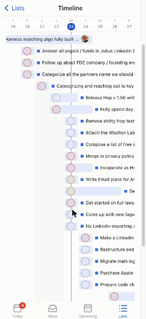
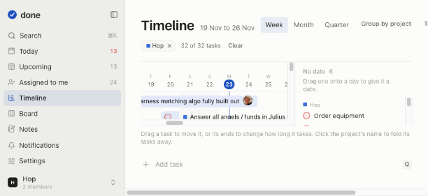
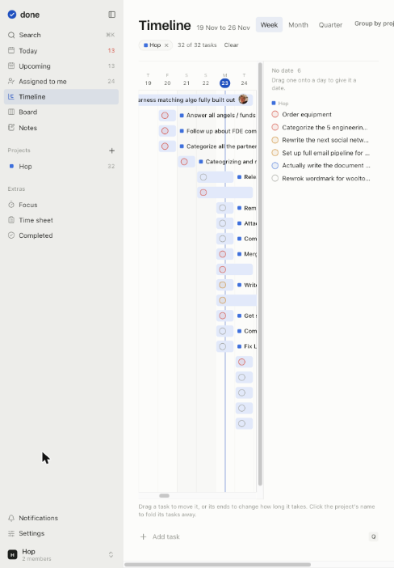
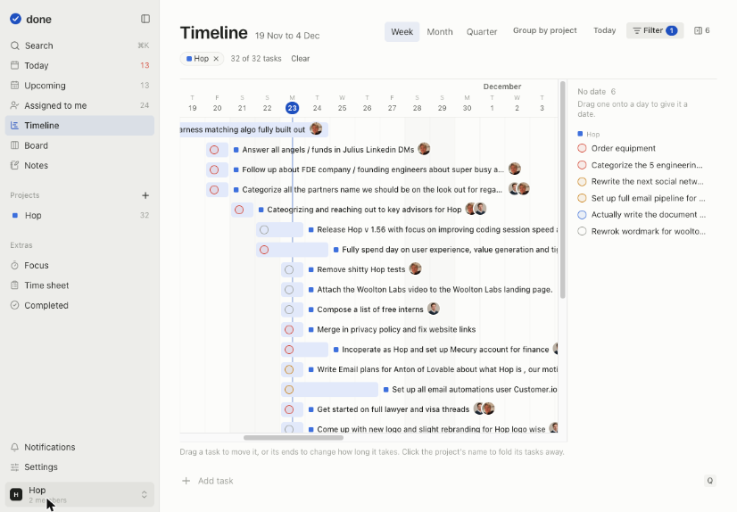
Options
- Week / Month / Quarter zoom, Group by project or date, Today, Filter, No date column, drag a task to move it, drag its ends to change length, fold a project by its name, Add task
Problems (all sizes)
- brokenThe first bar starts left of the visible area ("arness matching algo fully built out"): the view does not scroll to the earliest task or to today with room on the left.
- brokenTitles are drawn beside short bars and run under the next row's bar and faces; on narrow screens they are clipped to a few letters.
- brokenEach row shows a check circle inside a pale block and sometimes the person's face on top: on phone the two overlap into double circles.
- brokenThe page itself scrolls sideways (horizontal scrollbar at the bottom of the page in landscape and iPad), on top of the chart's own scroller.
- brokenPhone: Week/Month/Quarter, Group by, Filter and No date are not shown at all; day columns are about 28 pt wide.
- brokeniPhone landscape: the chart box is two rows tall; header controls are cut at the right edge ("Ta…").
- brokeniPad portrait: the chart is a ~150 pt strip next to a wide No date column.
- missingDrag uses the mouse; nothing replaces it on touch (move/resize by menu or date picker).
Fix
Treat as a rebuild, not a tweak: one row per task with the title in a fixed left column (sticky), the bars in a scrollable grid to its right; scroll to today on open; no page-level horizontal overflow; on phone, a list grouped by week with date ranges instead of a Gantt chart, with the Gantt as an optional landscape view; No date as a collapsible section, not a column; touch: tap a bar to open the task, edit dates in the sheet.
Notes
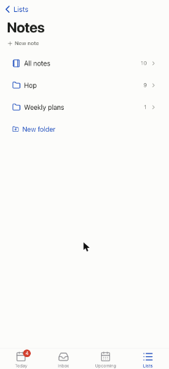
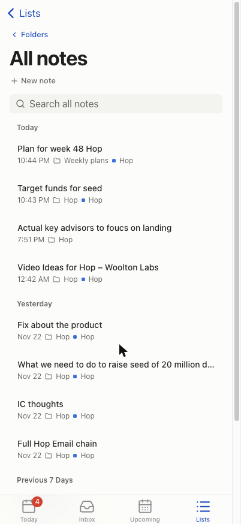
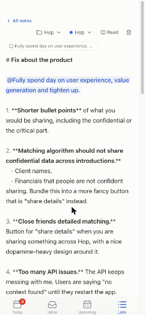
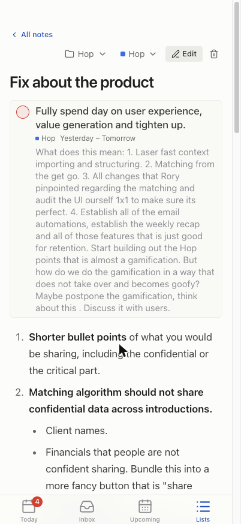
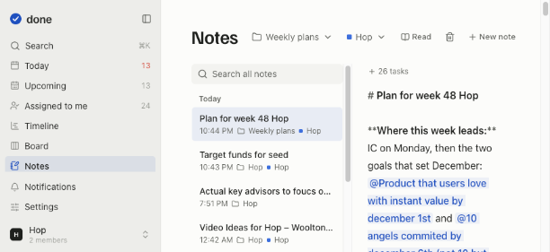
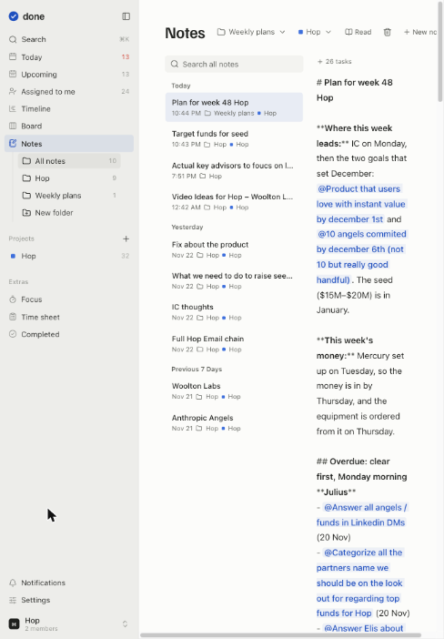
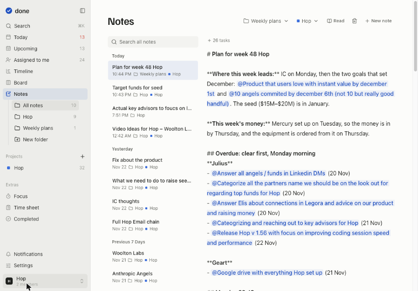
Options
- Folders (All notes, named folders, New folder), search, New note, per note: folder picker, project picker, Read/Edit toggle, delete, @task mentions, links, live editing with others in a workspace
Problems
- brokenThe editor shows Markdown source (
#,**,-) while you write. Apple Notes is rich text: the title is the first line in large bold, formatting is applied, not marked up. "Read" is a separate mode instead of the default. - brokenNote toolbar on phone: folder, project, Read and delete crammed into one row above the text; no Done button to dismiss the keyboard; no keyboard accessory (checklist, list, format, camera).
- uglyNavigation: two stacked back links ("‹ Lists" and "‹ Folders") on All notes; Apple Notes has one.
- ugly"+ New note" is a small text link at the top; Apple Notes uses a compose button at the bottom right.
- uglySpacing and type: body 15–16 px with tight paragraphs; Apple Notes uses 17 pt body, large bold title, generous line height, 20 pt side margins.
- uglyTask mentions render as long blue highlighted runs that break mid-sentence; in Read they become a card holding the task's whole notes (wall of text).
- brokeniPad portrait/iPhone landscape: sidebar + list + editor side by side leaves the note 110–200 pt wide; toolbar buttons cut off ("New nc").
- missingChecklists, pinned notes, swipe to delete in the list, share sheet, note date shown under the title.
Edge cases
- A note with only a title shows as "untitled" if the first line is a Markdown heading marker only.
- Live note while offline: the bar says Offline but the editor looks the same.
- Very long notes: the editor grows with the page; the toolbar scrolls away with it.
Fix
Replace the source editor on touch devices with a rich-text editor that stores the same Markdown (for example TipTap/ProseMirror with a Markdown serializer, which also has a Yjs binding for live notes), styled to Apple Notes metrics: first line as title (28 pt bold), 17 pt body, 1.4 line height, 20 pt margins; a keyboard accessory bar (checklist, bullet, heading, @task, Done); notes list in Apple's style with title, date and first line; compose button bottom right; one back button. On iPad: two columns (list + note), sidebar hidden by default.
Focus
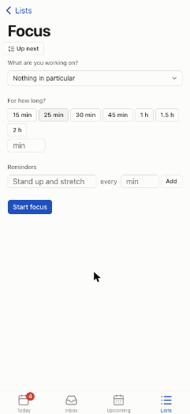
Options
- Up next, what you are working on (task picker), length chips 15 min to 2 h or custom minutes, reminders (text + every N min), Start focus
Problems
- uglyDesktop form: length chips wrap (2 h on its own line), "min" inputs about 45 pt wide with small text (iOS zooms on focus), Reminders row cramped.
- missingWhile running, nothing outside the app shows the timer: no Live Activity, no lock-screen countdown, no notification at the end when the app is closed. See Widget and Dynamic Island.
Fix
A big circular duration picker or wheel, one row per reminder, a large Start button; start a Live Activity on Start.
Time sheet
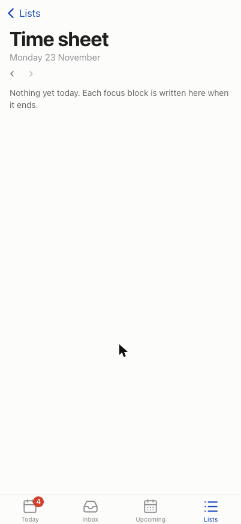
Problems
- uglyDay arrows are about 10 pt glyphs: far below 44 pt targets.
- missingNo week view or totals; no swipe between days.
Search
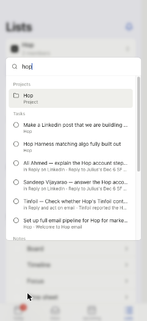
Problems
- uglyIt is the desktop command palette floating mid-screen over a dimmed page; on a device the keyboard covers its lower half.
- missingNo recent searches, no filter chips (tasks / notes / projects).
Fix
A full-screen search page with the field at the top (iOS style), results grouped, Cancel to close.
New task
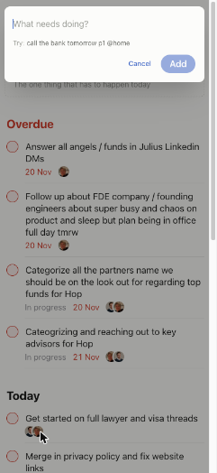
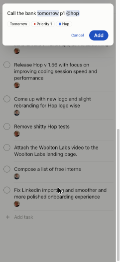
Options
- Type a title with natural dates,
p1priority and@list("Try call the bank tomorrow p1 @home")
Problems
- uglyTyped parts are marked in blue in the field ("tomorrow", "@hop") but "p1" is not, though it is read as Priority 1 (chips under the field show Tomorrow · Priority 1 · Hop).
- missingNo buttons for date, priority, list, assignee: only typed syntax, which nobody discovers.
- uglyPanel pinned to the top edge; Add stays pale until typing; Cancel and Add are small.
- broken(code) The top padding uses the safe-area inset, but only this panel: on iPad, New task is the inline desktop row instead.
Fix
Bottom sheet above the keyboard with a row of chips (Today, Tomorrow, Date…, Priority, List, Assign), like Todoist/Things.
Task details
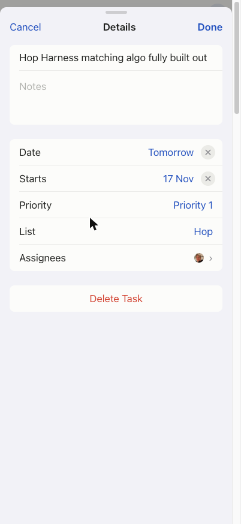
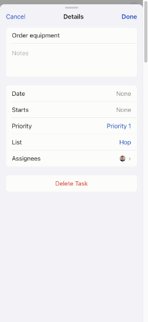
Options
- Title, notes, Date, Starts, Priority, List, Assignees, Delete; Cancel/Done
Status
goodThe best screen on the phone: native grouped-list style.
Missing
- brokenSubtasks are not shown at all: "Order equipment" has four, the sheet shows none, and none can be added.
- missingStart focus on this task, status (To do / In progress), make today's goal, duplicate, repeat.
Notifications
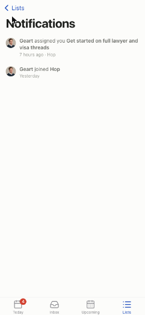
Problems
- missingNo Mark all as read; it is unclear whether tapping opens the task; no push notifications on the phone.
Settings
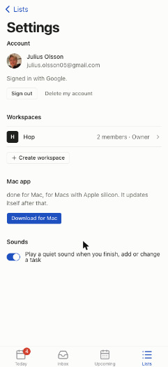
Options
- Account (Sign out, Delete my account), Workspaces (open, Create workspace), Mac app download (web only), Sounds
Problems
- uglyDesktop panes, not iOS grouped rows; Sign out and Delete account are small text buttons side by side (destructive one too easy to hit).
- missingIn the iPhone app: no version or "update available" (the Version and Text size panes are desktop-only); no notification settings; no default list or start-of-week.
Workspace picker
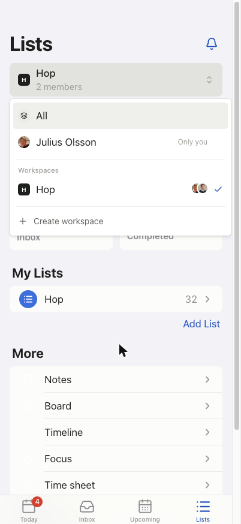
Problems
- uglyA desktop dropdown over the Lists screen; on a phone this should be a sheet. Edge case: a scope with one workspace still shows All / Only you / Hop, three choices that look the same to a solo user.
iPhone landscape
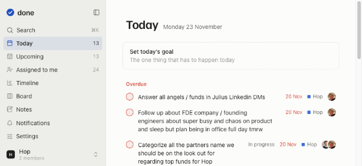
brokenAt 874 pt wide the app becomes the Mac app: sidebar with ⌘K, hover rows, no bottom bar or New task, three rows of content visible. With viewport-fit=cover and no left inset, the sidebar's left edge sits under the Dynamic Island when it is on the left, and the bottom rows under the home indicator.
Fix: keep the phone layout in landscape (height under 600 pt on a touch device), apply left/right insets, and decide per view: lists stay lists, Timeline can use landscape for its chart.
iPad
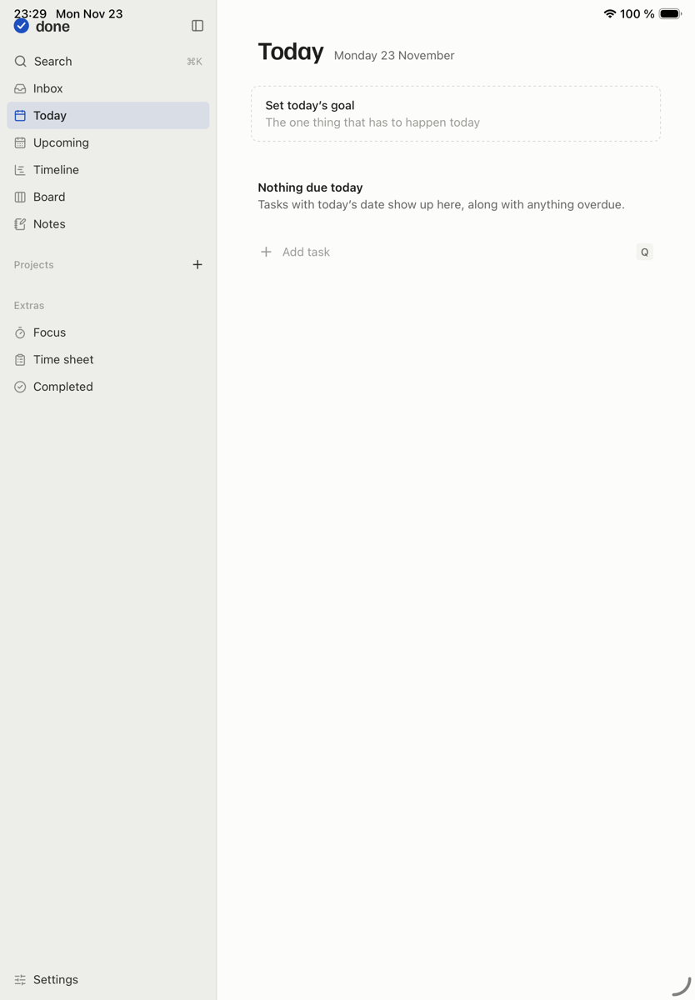
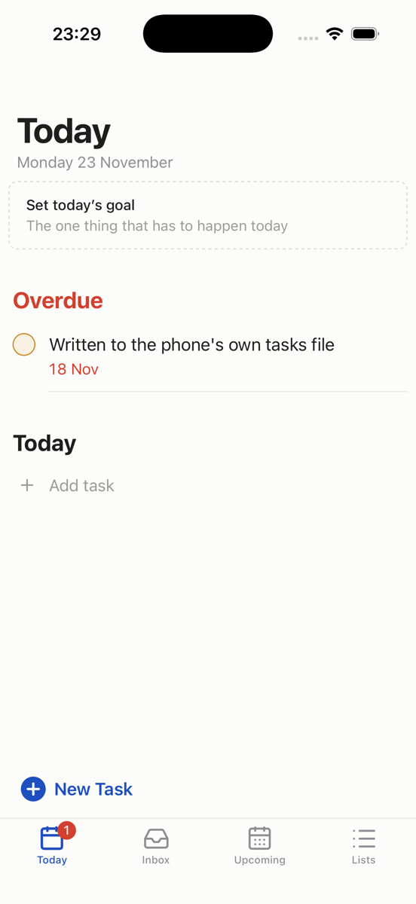
Seen in the iPad simulator (the app itself, not the website): the sidebar's "done" header is drawn over the status bar's time and date, and the sidebar shows ⌘K and Q hints with no keyboard attached. iPhone portrait is correct at top and bottom.
brokenBoth orientations get the Mac layout. Portrait (820 pt) is too narrow for sidebar + list + content (Notes, Timeline above). No top inset, so the title row sits under the iPad status bar: the cut-off header. Hover-only buttons and right-click menus have no touch path. ⌘K hints show without a keyboard.
Fix: a tablet layout: collapsible sidebar (hidden by default in portrait, like iPad Mail/Notes), two columns at most, 44 pt rows, all four insets, long-press menus. Keep keyboard shortcuts working when a keyboard is attached, but hide the hints unless one is.
Widget and Dynamic Island focus timer
From the Done tasks "Make a widget for the done app with all the tasks and focus. Make the knob on apple show the focus timer." and "Polish done mobile app experience… Prepare everything we need to do to make it be released in the App Store."
What it takes
- Widget (WidgetKit, SwiftUI): a Widget Extension target in the Xcode project (
crates/app/gen/apple); small (today count + next task), medium (next 3–4 tasks with check circles via App Intents on iOS 17+), large (Today list), lock-screen widgets (count, running focus). Data: the app writes a small JSON snapshot (today's tasks, the running focus) into an App Group container after every change and callsWidgetCenter.reloadAllTimelines(). - Focus timer in the Dynamic Island (ActivityKit Live Activity): the same extension adds an
ActivityConfiguration: compact (timer + task initial), minimal, expanded (task title, time left, Pause/Done buttons via App Intents), plus the lock-screen banner. Start/stop it from the app when focus starts or ends; the countdown usesText(timerInterval:)so it ticks without the app running. - Bridge from the web UI: a small Tauri iOS plugin in Swift with three calls:
widget_snapshot(json),focus_start(task, ends_at),focus_end(). The UI calls them where it already saves tasks and starts focus. There is a community plugin,tauri-plugin-widgets, that writes JSON to an App Group and reloads widgets, but owning ~150 lines of Swift is simpler than its JSON-UI layer. - Signing: App Group and the extension need provisioning under team 99MUK5B6TA (development builds) and, for TestFlight/App Store, distribution profiles. Live Activities need iOS 16.2+ and
NSSupportsLiveActivitiesin Info.plist.
Unknowns
- Whether
tauri ios buildkeeps a hand-added extension target when it regenerates the Xcode project; may need the target added by a script aftertauri ios init. - Widget taps need deep links into the app (
done://task/…), which also do not exist yet beyond sign-in.
Fix plan, in order
- Layouts by device, not width (phone / tablet / desktop) and all four safe-area insets on the app shell. Fixes the cut-off header, landscape and most of iPad at once. Verify on the iPhone 17 and iPad (A16) simulators in both orientations.
- Timeline rebuild: sticky title column, scroll to today, no page overflow, phone list mode, touch editing via the task sheet. Applies to the Mac too.
- Notes as Apple Notes: rich-text editor on touch (Markdown stored, Yjs kept), Apple Notes metrics, keyboard accessory bar, one back button, compose button, two-column iPad.
- Touch actions everywhere: swipe actions on rows, long-press menus, New task chips, Board Move to, sticky day headers, Assigned to me in Lists, icons in More.
- Phone versions of Focus, Time sheet, Search, Settings, workspace picker in the grouped-list style of Task details.
- Widget and Live Activity: Swift plugin + Widget Extension + App Group; deep links.
- App Store readiness: icons, launch screen, privacy manifest, TestFlight.
What this audit did not cover: the native shell on a real device (safe areas, keyboard avoidance, scrolling feel, haptics) beyond what the code shows; dark mode; Dynamic Type sizes; VoiceOver. Those need the simulator or the device and are the first check after step 1.